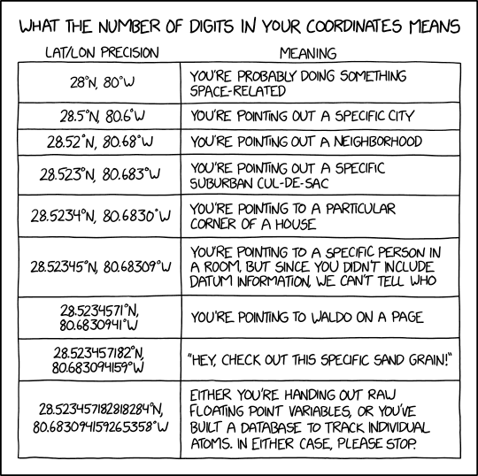

6 Make Your Data Software Ready
Those sharing or managing data can take small steps to make them “software ready.” These include using non-proprietary formats, structuring tables with specific columns and entries, including standards for information about time, place, and organism.
6.1 Use non-proprietary formats
What is it?
Non-proprietary file formats do not require specific software and can be accessed without licenses and within different software systems. For example, comma separated values (CSV) format is becoming an increasingly popular non-proprietary format compared to the proprietary .xlsx format.
Why?
Allows data to be useful in perpetuity by ensuring data readability and reusability across multiple platforms
Aligns better with the FAIR data principles
Supports open science.
Many applications (e.g. Microsoft Office) allow exporting into multiple formats, which makes it easy to share data in non-proprietary formats even if it was created using proprietary software.
Top Resources
Table of commonly used formats for common data types
A more detailed table that is specific to U.S. Federal records management
6.2 Structure tabular data in tidy/long format
What is it?
Long (or sometimes called “tidy”) format for tabular data can best be described as having one observation per row.
The following example shows two different formats – wide and long – of the same data. Notice that while sites 1, 2, and 3 are the column names filled with counts for each species in the wide format, site and count become the column names in long format.
Why?
The clear structure makes data more machine readable, particularly with commonly-used analytical software.
Data are as atomic as possible (e.g. no mixed types in one field)
It is easier to aggregate data across multiple files
| species | site_01 | site_02 | site_03 |
|---|---|---|---|
| Tilia americana | 4 | 2 | 4 |
| Pinus strobus | 3 | 3 | 3 |
| species | site | count |
|---|---|---|
| Tilia americana | site_01 | 4 |
| Tilia americana | site_02 | 2 |
| Tilia americana | site_03 | 4 |
| Pinus strobus | site_01 | 3 |
| Pinus strobus | site_02 | 3 |
| Pinus strobus | site_03 | 3 |
Top Resources
Wickham, H. (2014). Tidy Data. Journal of Statistical Software, 59(10), 1–23.
Video: Data Sharing and Management Snafu in 3 Short Acts (video)
Tips for working with data in BASH
6.3 Follow ISO 8601 for dates
What is it?
ISO 8601 is a convention for dates and times, where dates are listed as YYYY-MM-DD and time is given in Coordinated Universal Time (UTC, Zulu, or GMT) which is the time standard, relative to 0 longitude, that regulates global clocks.
The following table outlines how to write dates, times, and time intervals using ISO 8601:
| Description | Written in ISO 8601 |
|---|---|
| Date | 2023-04-03 |
| Date and Time with timezone offset | 2023-04-03T18:29:38+00:00 |
| Date and Time in UTC | 2023-04-03T18:29:38Z |
| Time Interval in UTC (April 3 - 5, 2023) | 2023-04-03T18:29:38Z/2023-04-05T00:29:38Z |

Why?
- Internationally accepted format used across multiple schemas (e.g.
Darwin Core,EML,ISO 19115) - Removes ambiguity related to timezone, daylight savings time changes, and time of day
- Better software integration of time date/time elements
Top Resources
6.5 Record latitude and longitude in decimal degrees in WGS84
What is it?
WGS84 is a coordinate reference system that clarifies location. Recording latitude and longitude coordinates in decimal degrees (DD), rather than degrees-minutes-seconds (DMS) or decimal-minutes (DM or DDM) standardizes them to be more machine and human readable. Degrees West and South are negative in decimal degrees, and longitude can range from -180 to 180, and longitude -90 to 90. Below are example coordinates in each format. Once locations are recorded in DD, the number of decimal places included should be adjusted to match the precision of the observation.
| Format | Example |
|---|---|
| Decimal Degrees (DD) | 30.50833333 |
| Degrees Minutes Seconds (DMS) | 30° 15’ 10 N |
| Degrees Decimal Minutes (DM or DDM) | 30° 15.1667 N |

Why?
- Users have to know where you collected this data, which requires a latitude, longitude, reference system and uncertainty.
- Decimal-degrees avoids special symbols (
°or‘) which is preferable for machine readable formats WGS84is a reference coordinate system that is widely used and incorporated in many GPS units and tools, and recognized as a standard by many government agencies.
Top Resources
Existing R/python/ESRI packages/functions
R package measurements
EML - find bounding coordinates
Some background on precision
6.6 Use persistent unique identifiers
What is it?
Persistent unique identifiers (PIDs) are globally unique identifiers to unambiguously identify granules of information in a machine-readable way. Identifiers can exist in acquired data, or they may be created. When persistent unique identifiers from authorities exist, they should be used (e.g., when using a taxonomic authority like WoRMS). If PIDs are created, the user is responsible for managing them (e.g. DOIs).
PIDs can capture details about the underlying sampling event (e.g., the PID Station_95_Date_09JAN1997:14:35:00.000 is comprised of the time and place of sampling), or they can be opaque (i.e., not indicating anything about the content, e.g., the PID 10FC9784-B30F-48ED-8DB5-FF65A2A9934E), or semi-opaque. There are sometimes good reasons to keep an identifier opaque, but transparent or semi-opaque identifiers can guide humans as well as machines.
| Type of PID | Use Case | Example | |
| Digital Object Identifier (DOI) | Actionable persistent link for papers, data, and other digital objects | https://doi.org/10.6084/m9.figshare.16806712.v2 | |
| International Generic Sample Number (IGSN) | Persistent identifier for physical samples | http://igsn.org/AU1243 | |||
| Life Science Identifier (LSID) | Persistent structured method for biologically significant data | urn:lsid:marinespecies.org:taxname:218214 | |
| Open Researcher and Contributor ID (ORCID) | Persistent actionable link for individuals | https://orcid.org/0000-0002-4391-107X | |
| Research Organization Registry (ROR) Identifier | Persistent actionable link for research organizations | https://ror.org/01yvark48 |
Why?
- To be able to uniquely identify a record in your data system or across data systems, it is important that it be persistent (consider samples possibly moving between institutions).
- Although it increases workload, it safeguards against confusion and inefficiency in the future.
- Maintains consistency through change, whether moving samplings between institutions, creating relational databases, or merging records.
- Allows users to precisely refer to data
Top Resources
A Beginner’s Guide to Persistent Identifiers
Software and Packages to generate uuids:
Guidance on how to use GUIDs (Globally Unique Identifiers) to meet specific requirements of the biodiversity information community
Use of globally unique identifiers (GUIDs) to link herbarium specimen records to physical specimens